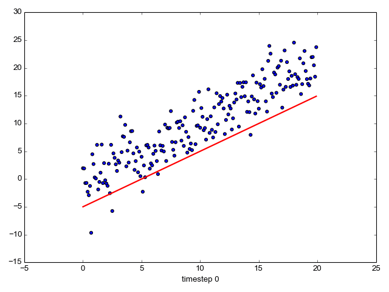
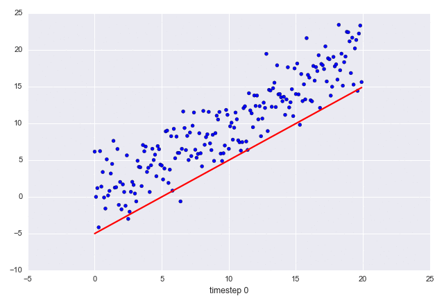

This is a brief post on how to draw animated GIFs with Python using matplotlib. I tried the code shown here on a Ubuntu machine with ImageMagick installed. ImageMagick is required for matplotlib to render animated GIFs with the save method.
Here's a sample animated graph:
A couple of things to note:
- The scatter part of the graph is unchanging; the line is changing.
- The X axis title is changing in each frame.
Here's the code that produces the above:
import sys
import numpy as np
import matplotlib.pyplot as plt
from matplotlib.animation import FuncAnimation
fig, ax = plt.subplots()
fig.set_tight_layout(True)
# Query the figure's on-screen size and DPI. Note that when saving the figure to
# a file, we need to provide a DPI for that separately.
print('fig size: {0} DPI, size in inches {1}'.format(
fig.get_dpi(), fig.get_size_inches()))
# Plot a scatter that persists (isn't redrawn) and the initial line.
x = np.arange(0, 20, 0.1)
ax.scatter(x, x + np.random.normal(0, 3.0, len(x)))
line, = ax.plot(x, x - 5, 'r-', linewidth=2)
def update(i):
label = 'timestep {0}'.format(i)
print(label)
# Update the line and the axes (with a new xlabel). Return a tuple of
# "artists" that have to be redrawn for this frame.
line.set_ydata(x - 5 + i)
ax.set_xlabel(label)
return line, ax
if __name__ == '__main__':
# FuncAnimation will call the 'update' function for each frame; here
# animating over 10 frames, with an interval of 200ms between frames.
anim = FuncAnimation(fig, update, frames=np.arange(0, 10), interval=200)
if len(sys.argv) > 1 and sys.argv[1] == 'save':
anim.save('line.gif', dpi=80, writer='imagemagick')
else:
# plt.show() will just loop the animation forever.
plt.show()
If you want a fancier theme, install the seaborn library and just add:
import seaborn
Then you'll get this image:
A word of warning on size: even though the GIFs I show here only have 10 frames and the graphics is very bare-bones, they weigh in at around 160K each. AFAIU, animated GIFs don't use cross-frame compression, which makes them very byte-hungry for longer frame sequences. Reducing the number of frames to the bare minimum and making the images smaller (by playing with the figure size and/or DPI in matplotlib) can help alleviate the problem somewhat.